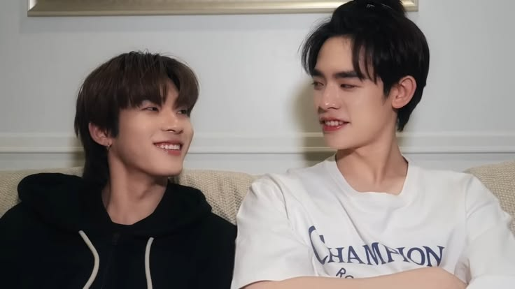
Welcome, My Love!
Haiii, camat datang di website yang aku buat sendiri dari awal sampai akhir HEHE. Sebelumnya aku mau klarifikasi dulu yaa, aku buat ini ngga capek sama sekali sayangku, justru aku buat dengan penuh semangat dan sangat dengan senang hati. Aku buat ini juga tentunya penuh dengan semua cinta aku, dan balasan apapun yang aku dapatkan dari kamu, aku akan terima semuanya dengan ucapan syukur ya sayangg, seberapa kecil atau seberapa besar itu ucapan mensive hari ini dari kamu, aku akan apresiasi semuanya dengan baik. Jadi aku ucapkan dulu disini yaa, terima kasih sayangku untuk segala hadiah dan ucapan yang kamu berikan yaa sayang, aku sangat bersyukur sekali karena pada hari yang spesial ini kamu masih menyempatkan waktu dan segala tenaga kamu untuk membuat dan memberikan semuanya kepada diriku. Aku sangat berterima kasih atas semuanya yaa sayangkuu, aku sangat apresiasi itu semua dan mungkin JUJUUUUR ratusan kali akan aku baca dan lihat, lagi dan lagi biar aku selalu tau seberapa sayang dan cintanya kamu kepadaku. Terima kasih juga yaa sayang udah memberikan semua yang terbaik untuk akuu, kalau bagi kamu apa yang kamu berikan belum seberapa, aku harap kamu tau dari POV aku, dari cinta, dan pedulinya kamu ke aku, semua benar-benar udah lebih dari cukup, cinta, dan perhatian aja sudah membayarkan semua cinta yang nyata, bahkan aku sendiri buat ini, mungkin slightly dari aku juga aku merasa ini belum seberapa, dan mungkin aku bisa memberikan hal yang lebih baik lagi, mungkin bisa dibilang apapun yang kita berikan mungkin kita bisa bilang ini kurang, tapi dari POV lainnya belum tentu seperti itu, aku juga tidak bisa menebak POV kamu dari aku menulis ini, tapi aku yakin kamu tetap apresiasi pemberian aku. Cukup atau tidak, yang aku tau semua yang kita berikan adalah bentuk cinta kita, dan itu adalah hal yang aku syukuri. Jadi jangan bilang pemberian kamu kurang atau belum seberapa yaa bebee, untuk aku semuanya sudah lebih dari kata cukup. Terima kasih banyak untuk semuanya sayang akuu!!
Dan aku yakin mungkin kamu baca ini malem-malem yaa? Website ini kalimatnya akan sangat panjang bebee, jadi kalau kamu ngantuk aku harap kamu beristirahat dulu baru nanti kalau sudah ada waktu baca lagi yaa sayangg? Jangan sampai ngga tidur yaa, besok masih Jumat, dan aku sangat yakin kamu masih ada kegiatan yaa sayang, jadi jangan dipaksa untuk bangun terus-terusan, kalau jam udah melebihi dari jam 2 (tapi kayaknya ngga mungkin deh baca sampai jam segitu...), matiin dulu hpnya, dan istirahat yaa sayangkuu. Meskipun ini hari spesial kita, tapi perhatikan juga untuk diri kamu sendiri ya sayangg, jangan sakit dan jangan kenapa-kenapa ya. Aku sayangg banget sama kamu bebee, aku ngga mau kamu kehilangan waktu istirahat kamu untuk baca semuanya yaa.
Sebelum masuk ke inti hari ini, aku mau ucapkan terima kasih yaa bebe, terima kasih karena sudah sangat peduli dengan diri aku, disaat aku mungkin belum bisa menjadi baik dengan diriku sendiri, kamu hadir dan selalu mengingatkan aku, kamu dengan sabar selalu mencoba untuk membuat aku sadar akan kesehatan diriku sendiri. Aku minta maaf yaa sayang kalau semisalnya ada dibeberapa saat aku masih terlihat sangat bandel. Bukan berarti aku tidak membaca, memahami dan menerapkan apapun yang kamu katakan, aku mungkin butuh adaptasi dengan kondisi yang baru, aku mungkin masih harus belajar banyak hal, jadi aku tidak ingin kamu menyerah disaat aku bandel, aku mau kamu terus berjuang dan terus menunjukkan sisi peduli kamu ke aku, mau sebandel apapun, sabar-sabar yaa bebee sama akuu, ingetin aku terus, khawatirin aku terus, dan perhatikan semua life update aku yaa bebee. Aku akan berusaha semaksimal mungkin untuk menjadi lebih baik lagi dan lagi, aku akan coba untuk terus mendengarkan kamu untuk kebaikan aku. Terima kasih juga ya sayang, disaat emosi kamu sedang tidak baik-baik saja, kamu lebih memilih untuk mengambil waktumu sendiri dibandingkan harus berbicara langsung dengan ego yang masih tinggi, kamu membuat space untuk dirimu sendiri merasa lebih lega baru kemudian membicarakannya dengan aku. Aku sangat bersyukur karena pacar aku kereenn, keren banget bisa berusaha berdamai dengan diri kamu sendiri, kerenn banget karena kamu tau cara memahami situasi aku, kereen banget karena keputusan itu justru bisa bikin kamu kangen banget, tapi kamu tahan karena kamu harus berdamai dulu. Dari aku tidak apa-apa yaa bebee, berapa waktu pun yang kamu butuhkan, aku akan selalu berikan, dan dengan sabar aku akan terus menunggu kamu yaa bebee. Aku bukan orang yang dengan gampang bisa marah, tapi aku bisa bilang amarah aku hanya bisa disampaikan lewat tangisan, mungkin orang-orang sebut sebagai cengeng, tapi begitulah emosi aku. Ketika aku benar-benar bisa marah, artinya aku tidak benar-benar marah, tapi aku hanya peduli saja, tapi ketika aku sudah tidak bisa berkata-kata dan aku nangis, justru itu jadi moment aku sangat marah. Tapi tangisan aku tidak selalu berarti marah, ada tangisan bahagia, ada tangisan sedih, dan ada juga tangisan yang datang karena rasa rindu. Aku jadi mengingat hari pertama aku mengenalmu di anon. Kamu membuat diriku salting, yaa aku salting, tapi reaksi kedua yang datang adalah air mata, dimana disana muncul rasa takut, dan senang yang bersamaan. Aku takut untuk jatuh cinta lagi dan harus merasakan sakit yang mendalam lagi, tapi disisi lain aku senang, karena ini pertama kalinya dalam hidup aku, aku bisa merasakan menjadi sosok yang lebih hidup lagi. Tidak pernah ada orang yang bisa menjaga dan membuatku menjadi secinta itu, dan kamu berhasil membuat aku jatuh cinta. Disaat itu aku perang dengan diriku sendiri, dan hati serta otakku justru memilih untuk bertahan dengan kamu. Bukan karena terpaksa, dan bukan karena kasihan, tapi karena mereka benar-benar mempercayaimu dan mereka memilihmu, begitu juga dengan diriku.
Lagu Olivia Rodrigo yang judulnya drop dead itu pada bagian lirik "One night I was bored in bed, And stalked you on the internet. It's feminine intuition, 'Cuz I always had a vision of us standing like this" adalah salah satu bentuk kejadian nyata, karena pada saat itu aku sedang sibuk dengan kegiatanku dikamarku, kamu datang dan aku sangat tertarik untuk membalas semua pesan anon-mu. Aku awalnya bukan seseorang yang dengan mudah mengeluarkan sisi feminime, biasanya aku akan tunjukkan pada orang-orang terdekatku saja, namun ntah kenapa pada saat itu rasanya aku hanya ingin mengeluarkannya kepadamu. Kemudian di hari itu juga pada malam hari aku sejujurnya bisa membayangkan seberapa bahagianya jika diriku bisa berbicara langsung denganmu atau bahkan bisa menjadi milikmu, sepertinya aku akan sangat bahagia dan mungkin hari-hari aku tidak akan menjadi gelap lagi, mungkin aku bisa melihat warna-warna lagi. Aku menyimpan 1 video yang pada saat itu sudah aku tunjukkan melalui story (21 Juni 2026), dimana aku sudah menyimpan dan menyiapkannya dari lama, aku tidak bohong, saat itu aku menyimpannya di tanggal 30 April 2026, tepat pada malam hari aku mengirimnya pada salah satu platform dan berkata "I hope I get to post this video on my story and tagging that person if he truly mean to pursue, love and be patient with my attitude", dan temanku membalas dengan kata "bisa", dan itu menjadi doaku sejak hari pertama. Aku mungkin masih memiliki banyak rasa takut, khawatir, dan trust issue pada saat itu, namun perlahan-lahan semuanya memudar, digantikan dengan rasa adoring. Pada saat PDKT-pun, masih ada banyak rasa takut, tapi aku lawan semuanya dengan baik, dan itulah kenapa dari bulan Mei, aku selalu berusaha untuk menunjukkan rasa sayang dan peduli aku ke kamu, bebee. Aku berusaha untuk menunjukkan ke kamu bahwa aku pada akhirnya benar-benar jatuh kepada seseorang yang bernama Zevond ini. Yang aku pahami dan pelajari, Zevond adalah orang yang baik, sabar, tulus, dan tentunya sangat setia, dari awal mengenalnya di roomchat-pun aku bisa memahami itu, dan sampai hari ini, Zevond adalah sosok yang seperti itu, baiknya, lucunya, tulusnya, sabarnya, dan setianya, selalu sama, dan itu yang terus membuat diriku jatuh cinta, bagiku, Zevond sangatlah sempurna, dan aku bersyukur, aku bersyukur karena hingga hari ini orang beruntung yang kamu pilih untuk kamu percaya sebagai pasangan kamu, partner kamu, rumah kamu, dan segalanya buat kamu adalah diriku, jadi akan aku ucapkan seribu kata terima kasih untuk kamu, bebe. Aku meminta maaf atas segala kesalahan yang pernah aku lakukan pada kamu yaa bebe, yang membuat kamu sedih atau marah, aku akan minta maaf, dan aku usahakan kedepannya tidak akan terjadi kesalahan yang sama lagi, kasih tau aku yaa bebee kalau semisalnya aku ada salah sama kamu, kasih tau aku yaa bebee. Aku nantinya akan perbaiki sikap aku menjadi lebih baik yaa. AKU SAYANGGG SEKALI SAMA KAMUU BEBEEE, sangat sangat sangaaaat menyayangi dan mencintai Zevond.
Our Memories
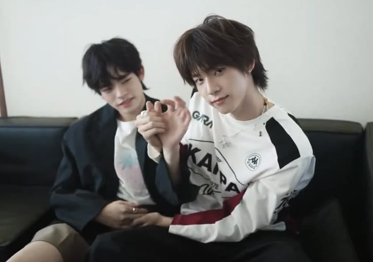
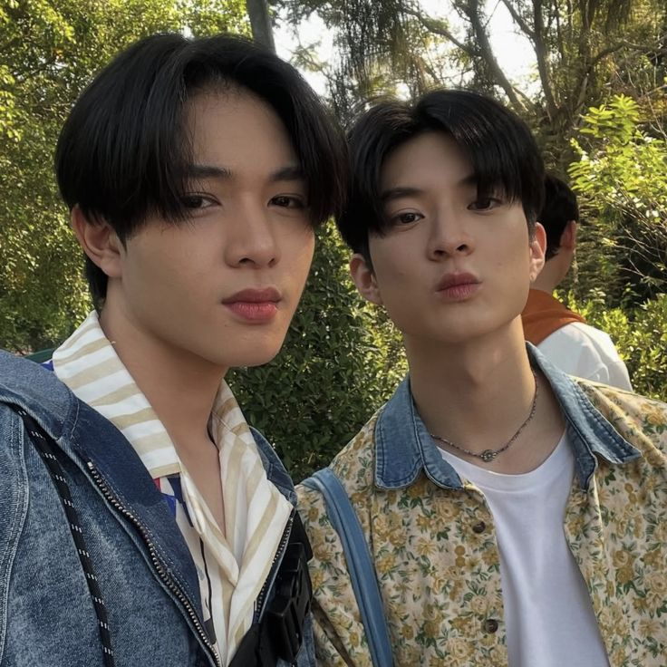
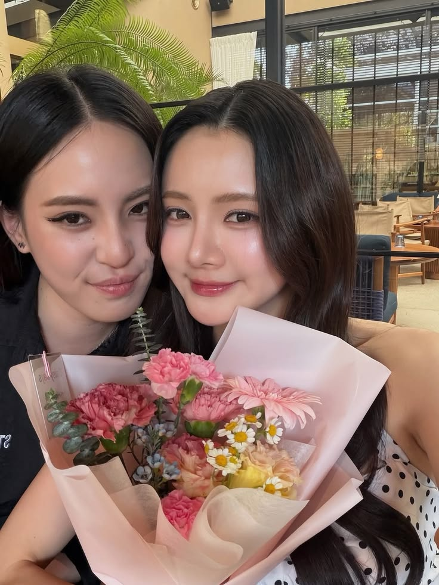
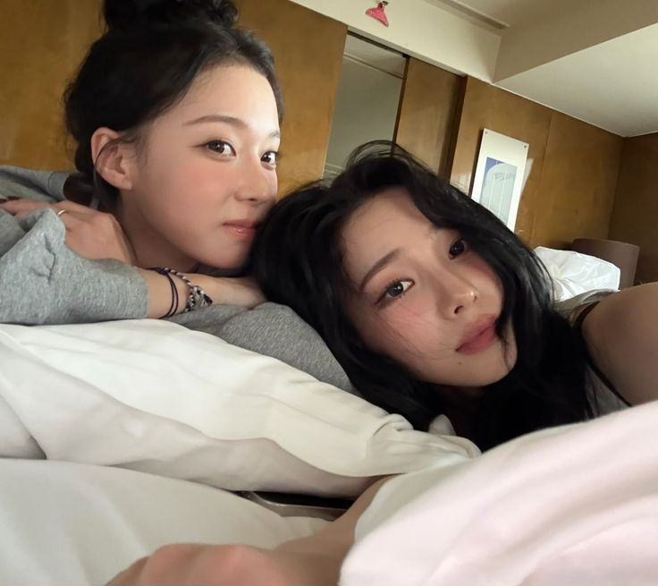
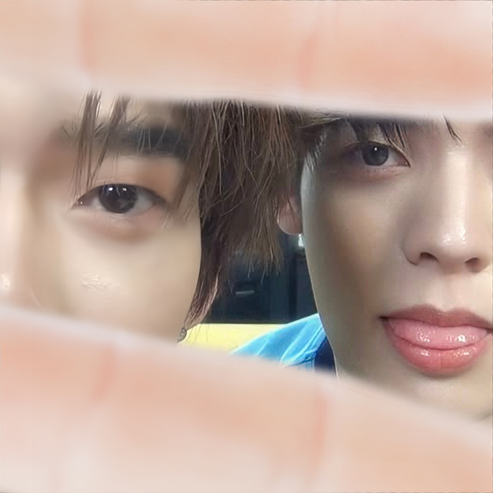
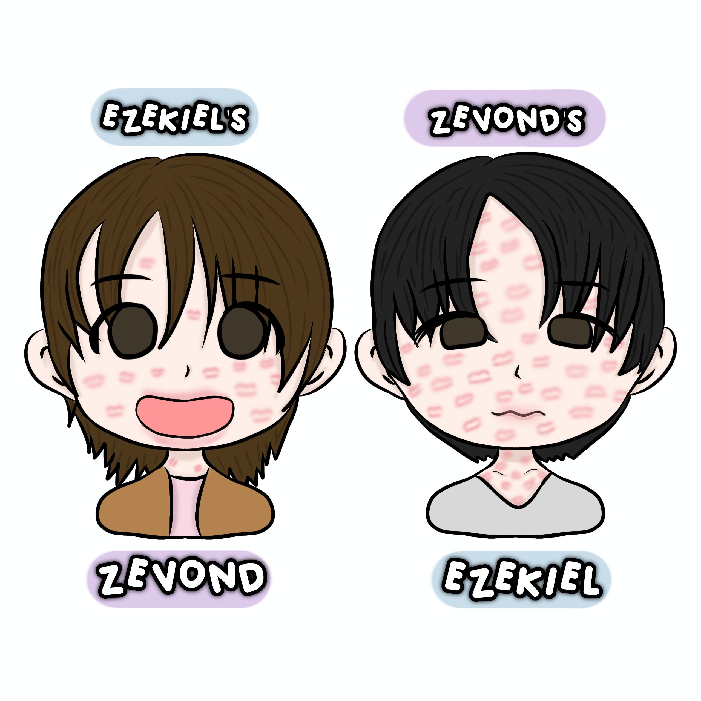
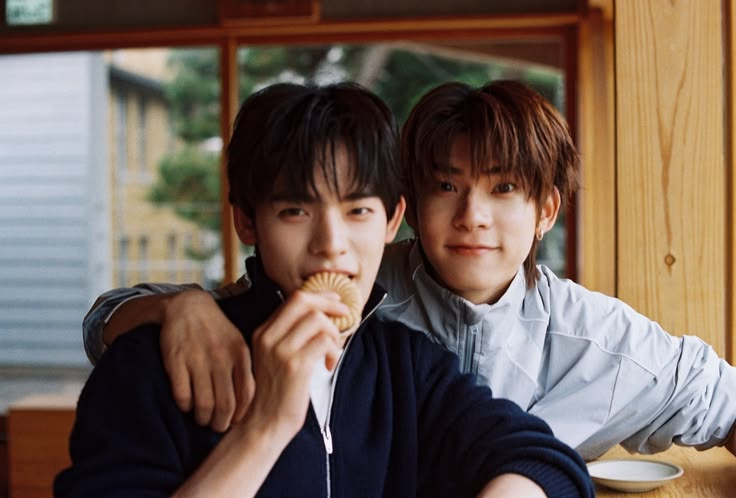
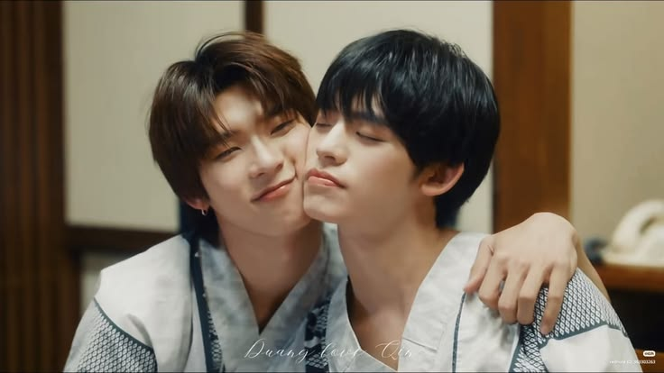
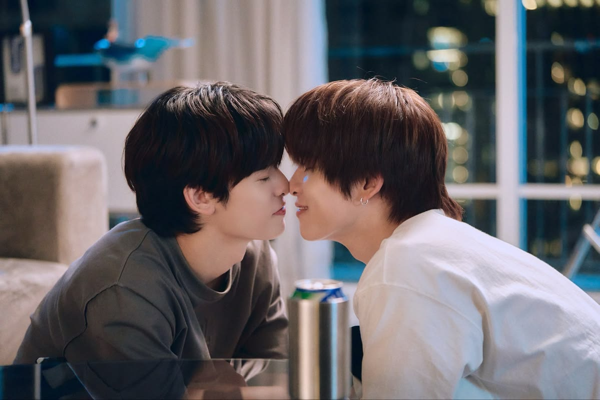
Ini adalah kenangan kita (HEHE), muse kita dan beberapa muse yang pernah kita temp-kan. OIYAAA sama gambar chibi imut akuu hehe, karena imut jadi aku masukkan sajaa, kan lagian termasuk kenangan kita yaa. First impression aku temp sama kamu? Aku terkaget-kaget dan wow.. karena biasanya aku JARAAANNGGG banget temp sama seseorang, paling sama Jerry aja, terus aku memberanikan diri ngajakin kamu temp jadi ChokunAston dan kamu mau itu AKU TERHARUUUU BANGETTT, pertama kalinya aku ngajak seseorang temp hehe.. Makasih yaa bebee udah selalu menemani akuu, segala temp kitaa, aku benar-benar apresiasi semuanya dan aku nikmati semua moment-moment kita. Temp bareng kamu itu seru banget, padahal cuman ganti muse aja yaa, tapi ntah kenapa rasanya kayak seru dan seneng banget, apalagi waktu Winrina. Dulu sebenernya aku pernah nyoba ngajak temen aku temp anak AESPA, tapi waktu itu ditolak karena AESPA di boikot dan dibilang semua anak SM problematic, makannya dari hari itu sebenernya aku sendiri takut buat ngajakin orang-orang temp, aku lebih memilih buat temp sendirian atau kalau diajak baru aku akan temp. Waktu aku temp jadi Aston aja sebenernya aku ngga nyangka kamu akan dengan senang hati mau temp bareng aku setelah kamu beres temp sama adek-adek kamuu, aku sendiri awalnya ngga percaya, tapi itu aku senenggg banget. Terus diajak temp LillyBelle aku juga lebih seneng lagi, dan pada akhirnya Winrina, ADUHHHH, kamu harus tau ya bebee, aku excitednya excited bangeet, kayak seneng, ngga percaya, dan kaget. AKU LIHAT KAMU PAKAI WINTER KAYAK SENENGG BANGETTT, bukan karena Winternya (Ya karena winternya dikit soalnya aku sayang sama Minjeong juga), tapi karena aku tau ternyata masih ada yang mau temp jadi AESPA, dan bahkan aku senengg banget waktu itu banyak yang dukung Winrina sebagai bangsa yang besar. Aku bisa temp lama bukan karena aku malas ganti, tapi rasanya aku bener-bener enjoy tempnya, aku juga seneng liatin kamu sebagai Winter, disatu sisi kamu juga kayak Winter, ada imut imutnya gitu, tapi dewasa dan beberapa kali bisa jadi seseorang yang tegas, pokoknya aku suka aja liatinnya.
Dan tentunya yang paling akan aku suka adalah diri kita sebagai TeeteePor, alias muse utama kita. Kamu Teetee banget bebe REAAAL inimah ngga ada bohong-bohong, beneran Teetee banget. Aku juga seneng dan suka aja liatin kamu sebagai Teetee, cakep, dewasa, tegas, tapi ada juga sisi manja kamu. Setiap aku sendiri lihat Teetee, rasanya juga aku lihat kamu HAHAHA, terbayangkan kamu sebagai Teetee. GEMEESS rasanya mau aku uyel-uyel juga yaa kamu bebeee, tapi paling yang ada aku yang lebih di uyel-uyel, pipi aku dicubit, digigit, dicium, semuanya aja dilakukan. Aku tau kedepannya juga pasti akan ada banyak sekali muse yang bisa kita temp bareng, dan itu akan sangat aku nanti-nanti, tapi sebelumnya itu kembali lagi ingin aku ucapkan, terima kasih yaa bebee, mungkin ada beberapa kali aku bingung muse apa yang bisa kita temp bareng, tapi nantinya setiap aku mau temp, aku bilang sama kamu yaa bebee, biar seandainya bisa couplean dan kamu mau, kita bisa temp bareng lagi. Masih ada banyak yaa yang bisa kita temp-kan bareng, aku nantikan setiap harinya yaa bebee, aku akan nikmati semua momentnya, dan kalau bisa akan aku abadikan setiap moment itu sayangg, bahkan hal-hal yang aku buat juga nantinya akan aku abadikan aku simpan, aku pamerkan, dan abadikan selamanya di album hp aku yaa bebee. Terima kasih untuk semua waktu yang kita lalui berdua yaa sayangg, terima kasih juga karena kamu sendiri mau banget abadikan temp kita dengan video dan kalimat panjang di cf kamu yaa bebee, kalimat kamu ngga kalah indahnya dengan hati kamu, dan rasanya hati aku lega banget, dicintai sebesar dan setulus ini, rasanya seperti aku berhasil menemukan seseorang sebagai emas yang paling berharga. Aku bersyukur sekali sayang, dan mungkin kata terima kasih akan kurang, jadi aku akan balas semua kebaikan, ketulusan, dan kesabaran kamu dengan sikap aku yang sebaik mungkin yaa sayang, aku akan dengarkan ucapan kamu, aku akan lakukan apapun demi kebaikan aku juga, aku akan selalu membaca dan mendengar semua perkataan kamu sayangkuu, dan aku tidak akan berbohong sedikitpun sama kamu yaa bebee.
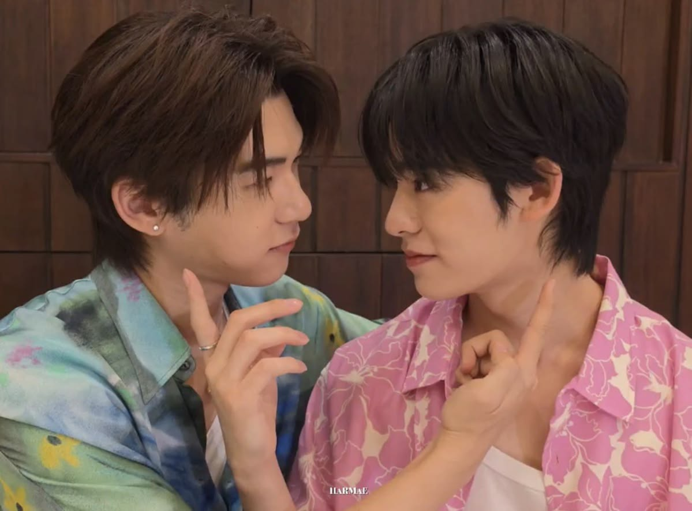
Happy Mensive Dearest Zevond!
Dann sampailah pada page ini. Kali ini yang aku mau sampaikan adalah selamat bulan kedua yaa bebee, alias happy 2nd mensive bebee! Terima kasih banyak selama 60 lebih hari ini atas segala waktu yang telah kita lalui berdua, rasanya tidak singkat namun tidak lama juga. Rasanya setiap moment yang kita lalui menjadi suatu hal yang paling indah, setiap waktu yang kita jalani, aku nikmati setiap waktu itu dengan baik, aku usahakan aku akan terus hadir di waktu-waktu kita berdua bisa spend waktu berdua. Senang dan sedih kita lalui berdua, ada waktu dimana kita saling merasa senang, dimana kita saling memberikan semangat dan kebahagiaan bersama, tapi ada juga waktu dimana kita harus saling memberi ruang untuk diri kita sendiri. Ada waktu dimana aku masih kurang paham dengan pandanganmu untuk kebaikanku, dan ada waktu dimana aku masih sangat bandel dengan ucapanmu, dan tentunya kamu akan marah dengan aku. Tapi aku selalu berusaha memahami hal tersebut, dan dengan senantiasa aku akan menunggu kamu bebee. Segala waktu itu, senang ataupun sedih, aku tetap bersyukur, karena aku bisa belajar banyak tentang diriku dan juga tentang dirimu bebee. Jadi aku ucapkan sekali lagi, terima kasih yaa sayang, untuk semuaaanya, tetap menjadi baik, tetap menjadi seseorang yang mencintai aku sekalipun aku bandel, tetap bersabar dengan semua sisi aku yang terkadang baik juga terkadang seperti anak kecil yang nakal, tapi aku sangat bersyukur dan berterima kasih karena kamu masih menerima semua sisi aku itu.
Bebee, aku akan terus ada disini yaa sayangkuu, sampai kapanpun itu selama kamu memperbolehkan aku untuk terus ada bersamamu, aku akan terus bertahan dan akan selalu ada disisimu yaa bebee, real no fake fake. Jangan usir aku keluar dari hidup kamu yaa bebee, aku mau belajar bareng sama kamuu, aku mau terus berjalan bersama kamuu, karena sampai hari ini yang aku rasakan selama berjalan sama kamu, aku sangat enjoy, sama sekali tidak ada rasa takut, rasa sakit, dan pantangan apapun itu dihadapan aku selama bersama denganmu. Aku masih mau menghabiskan semua waktuku bersama denganmu, aku juga masih mau membuat banyaakk sekali kenangan bersama kamu bebee. Aku masih mau memberikan banyak pap dan suaraku kepada kamu sayangg, aku juga masih mau mendengarkan semua pujian darimu. Aku tidak haus akan pujian orang-orang, namun pujian dari mu justru menjadi semangat baru untuk aku, aku tidak biasanya menjadi seseorang yang 'Pede', namun semenjak banyak kalimat baik yang kamu ucapkan kepadaku, rasanya aku hanya ingin membuktikan dan terus memberikannya kepadamu. Sayangg, aku minta maaf yaa kalau beberapa kali bikin kamu marah dan khawatir, tapi aku berjanji akan menjadi lebih baik, dan itu aku buktikan dengan kesehatan aku yaa bebee, aku minta maaf jika beberapa kali bikin kamu harus mengelus dada kamu, tapi dengan senang hati kamu tetap berusaha untuk berbicara dengan diriku, dan kembali lagi mencintaiku.
Aku tidak bohong sama sekali ketika aku bilang "Aku setiap hari selalu mendapatkan alasan untuk jatuh cinta kepadamu lagi dan lagi", karena memang nyatanya aku benar-benar mendapatkan alasan untuk terus mencintaimu. Aku sama sekali tidak mendapatkan alasan atau bahkan sejujurnya tidak berpikir tentang alasan untuk tidak mencintaimu. Bagaimana aku akan mencari alasan untuk tidak mencintai kamu ketika kamu sendiri dimata aku adalah seseorang yang sempurna? Akan aku katakan lagi, kamu sangat baik, kamu baik dalam segala sisi, kamu peduli, kamu berusaha memberikan yang terbaik untuk aku, kamu bahkan menawarkan banyak sekali hal untuk kamu berikan dan belikan untuk aku. Kemudian kamu sangaatt sabar, kalau kamu tidak sabar, tidak mungkin kamu tahan dengan aku yang bandel sekali, mungkin kamu akan marah besar, mungkin kamu akan menyerah untuk memberitahu segalanya kepadaku, mungkin kamu juga akan berhenti untuk peduli, namun hingga saat ini kamu tidak menyerah sama sekali, dan kamu terus peduli. Kamu tulus, dan aku sangat tau akan hal itu. Semua perkataan kamu tulus, karena tidak hanya kata yang keluar dari ketikan kamu, melainkan bukti nyata dengan segala tindakan kamu. Kamu memahami banyak sekali sisi aku, kamu memahami semua hal tentang aku, dan kamu selalu mencoba untuk memberikan yang terbaik. Kamu tau jelas aku sangat menyukai membaca kalimat panjang, vidcu, dan hadiah-hadiah kecil dari kamu, sehingga kamu selalu berusaha untuk memberikan itu. Aku tidak bisa balas semuanya, yang bisa aku ucapkan adalah seribu kata terima kasih, rasa syukur, dan doa terbaik aku yang akan selalu aku panjatkan untuk kamu agar kamu mendapatkan hari, dan kehidupan yang terus baik-baik saja yaa bebee, semoga semuanya berjalan dengan lancar yaa sayangg, semoga juga hari-hari kamu tidak harus terasa terlalu berat yaa, apalagi dengan adanya akuu. Doa aku akan selalu tentang kamu, karena segala kebaikan kamu pantas untuk dibalaskan dengan kebaikan lainnya, dan kebahagiaan lainnya untuk kamu.
SEKALI LAGI AKU KLARIFIKASIII, aku buat ini ngga capek sama sekali yaa bebee, aku bener-bener kerjain dengan senang hati, jadi sama sekali tidak ada rasa capek aku untuk mengetik sepanjang ini yaa bebee, jadi tidak perlu khawatir, dan aku buat ini selama waktu senggang aku, sama sekali tidak mengganggu waktu waktu istirahat aku atau waktu waktu sibuk aku yaa bebee. Semuanya aman BENEERRAN, aku ngga ada bohong yaa sama kamu sayangg, aku bahkan tidak ada niatan berbohong sedikitpun sama kamu, mau nantinya aku berbicara jujur terus ternyata salah aku dan kemudian aku dimarahi dengan kamu, juga aku akan terima konsekuensi itu, setidaknya aku berbicara yang sebenar-benarnya, dan aku mau belajar dari POV kamu kalau apa yang aku lakukan adalah salah. Aku buat ini sama sekali tidak ada rasa keberatan, justru aku buat ini karena aku ingin menyampaikan seberapa besar sayangnya aku kepada kamu, aku buat ini karena ingin menunjukkan kepada kamu bahwa kamu sangat matters the most untukku. Rasa bahagia dan senangku akan selalu ada di kamu, selama kamu merasa senang, maka aku juga akan merasa senang. Dan kali ini doa dan harapan aku adalah semoga kebahagiaan dan kesenangan kita tidak berhenti dihari spesial ini saja yaa bebee, semoag hari-hari berikutnya juga kita akan selalu bisa seperti ini, mencari cara untuk terus mencintai satu sama lain, terus mencari alasan untuk mencintai lagi dan lagi. Aku harap hari setelah hari ini kita bisa terus mencari alasan untuk bahagia berdua terus yaa bebeee.
Aku sayang banget sama kamu bebeee, dan itu akan selalu sama yaa sayang, ngga akan luber kemana-mana, lubernya ke seluruh diri aku aja, ngga akan keluar kemana-mana lagi yaa. I love you soo much bebe, more than anything. I love you because you bring peace to my chaos, I love you because your smile brightens my darkest days, I love you because you listen when no one else does, I love you because you believe in me even when I doubt myself, I love you because of the warmth in your hugs, I love you because you make ordinary moments feel magical, I love you because you understand my silence, I love you because your laughter is contagious, I love you because you accept all my flaws, I love you because you inspire me to be better every day, I love you because being with you feels like home, I love you because you make me feel safe, I love you because of your kind and gentle heart, I love you because you always know how to make me laugh, I love you because your presence calms my anxiety, I love you because you support my dreams relentlessly, I love you because of the sparkle in your eyes, I love you because you are my favorite person to talk to, I love you because you respect my boundaries, I love you because life is simply better by your side, I love you because you appreciate the little things, I love you because you have the purest soul, I love you because our memories mean the world to me, I love you because you make me feel truly valued, I love you because of your patience with me, I love you because you are my greatest adventure, I love you because your touch gives me comfort, I love you because you stand by me through thick and thin, I love you because you make my heart beat faster, I love you because you are wonderfully unique, I love you because you never give up on us, I love you because holding your hand feels effortless, I love you because you bring out the best version of me, I love you because you forgive my mistakes, I love you because every song reminds me of you, I love you because you care so deeply for others, I love you because your energy is contagious, I love you because you make boring routines fun, I love you because I can be entirely myself around you, I love you because you are my favorite thought before falling asleep, I love you because you challenge me to grow, I love you because of the sweetness in your voice, I love you because you make the world a softer place, I love you because you remember the small details about me, I love you because you are my best friend my partner my home my everything, I love you because you make me feel loved unconditionally, I love you because your love is my greatest blessing, I love you because you give me hope for the future, I love you because you chose me, I love you simply for being exactly who you are. I just love you soo soo much, that all of this won't even describe it. And forever I will love you bebee. Thank you for being you, thank you for loving me, thank you for just existing, and thank you for every gift you send to me, I really appriciate it a lot, thank you for just giving me the best part of you, thank you for letting me see the home you made for me, thank you trusting me and see me as your home. And one again before I ended this page, I love you so so so sooooooooooooo much bebe. I do really hope, website sederhana ini bisa menjelaskan seberapa besarnya aku mencintai kamu yaa bebee, maafkan aku jika ada kata yang mungkin tidak mengenakan yang tidak sengaja aku sampaikan disini, aku tidak ada maksud buruk apapun yaa ke kamu sayangg jika memang ada kata yang salah. Kita bertemu lagi di mensive berikutnya yaaa sayangg, semoga kita tidak hanya spend waktu dalam bulan, melainkan bulan itu berubah menjadi tahun, dan tahun itu semoga bisa lebih dari kata selama-lamanya yaa. Semoga dibulan yang sama, namun di tahun yang berbeda, kita masih bisa memberikan ucapan mensive untuk sesama yaa, dan mensive itu mungkin akan menjadi kata anniv hehehe. Love youu bebee!
Por mengatakan bahwa dia bersyukur karena Teetee adalah partnernya, maka aku akan mengatakan hal yang sama. Terima kasih karena telah memilihku menjadi pasanganmu, terima kasih karena memperbolehkan aku menjadi rumahmu, terima kasih karena mempecayai aku, dan terima kasih karena mau memperjuangkan bahkan menjaga aku. Aku sangat beruntung, dan aku sangat bersyukur karena orang yang berhasil membuka pintu hatiku kembali adalah kamu. Kamu mau selalu bertahan disisiku, bahkan kamu banyak sekali menjadi garda terdepan untukku. Meskipun aku sendiri yakin aku bisa menjaga diriku sendiri, tapi kamu selalu menawarkan dirimu untuk menjadi penjaga hatiku yang terbaik. Yang pasti, aku tidak akan pernah menyesal karena hati dan pikiranku sejak dari awal memilih kamu. Aku tidak pernah menyesal menunggu keberanianmu untuk berbicara langsung denganku pada saat itu, aku tidak menyesal karena pada akhirnya aku memilih kamu, dan aku pastikan, untuk selamanya aku juga tidak akan pernah menyesal karena mencintaimu sedalam, sejauh, dan seindah ini. Aku sangat menyayangi, dan mencintaimu, Jepi. Akan selalu aku pastikan cinta dan kasih sayang serta segala perhatian yang kamu berikan ke aku, aku tidak akan pernah sia-siakan itu. Aku akan membalas semuanya dengan kesenangan hati aku, aku akan membalasnya bukan karena aku terpaksa, bukan karena itu adalah kewajibanku sebagai pasanganmu, dan bukan karena sekedar formalitas, melainkan aku membalasnya karena aku benar-benar menyayangi dan mencintai kamu, aku membalasnya karena aku juga ingin menunjukkan seberapa besar kasih sayangku yang tidak pernah bermain main dengan keseriusanku, aku membalas semuanya karena aku mengapresiasi semua kata, dan semua waktu yang telah kita habiskan berdua, aku membalasnya dengan tulus, dan tanpa pamrih, aku membalasnya karena hatiku yang mau, dan semua ini dituliskan dengan hatiku sendiri tanpa dilebih-lebihkan. Mungkin semua kata disini ada beberapa yang kesannya seperti terlalu formal, atau mungkin kesannya seperti kaku, atau bahkan ada yang sangat alay sekali, namun semuanya benar-benar keluar dari hatiku. Aku bangga dan tentunya aku sangat bahagia, karena seseorang yang bernama Zevond ini awalnya adalah seseorang yang tidak aku ekspektasikan untuk mendapatkan batasan yang lebih, namun beruntungnya aku, aku dipercaya, dan diperbolehkan untuk menjaga hatimu.
Maka izinkan aku untuk terusmenjaga ketulusan, kebaikan dan perhatian darimu ya, Jep? Izinkan aku untuk terus mencintaimu.
Aku mungkin tidak selalu pandai dalam menunjukan bentuk cinta itu, tapi aku harapkan kamu bisa merasakan cinta itu secara langsung,
yaa bebee? Izinkan aku untuk bertahan selama-lamanya, dan aku tidak akan pernah pergi dari hidup kamu, sayang.
Tidak perlu takut atau memikirkan hidupmu tanpa aku, karena aku akan selalu ada dihadapan kamu, aku akan selalu
menyapa pagi, siang, dan malam-mu, aku akan selalu memberikan semangat, dukungan, dan ucapan bangga yang sama,
aku akan terus mendoakan yang sebaik-baiknya untuk kamu, dan yang pasti, aku akan selalu mencintaimu sama seperti
awal dari aku secara perlahan-lahan mulai mempercayai kamu, dan memperbolehkan kamu untuk menjaga kepercayaanku,
maka akan sama dengan aku, izinkan aku juga untuk selamanya menjaga kepercayaan kamu bebee, tanpa kamu harus
khawatir akan rasa takut kehilangan, rasa takut segala masa lalu burukmu itu akan terjadi kembali, rasa takut
akan segala kemungkinan buruk yang nantinya terlintas dikepala kamu, karena aku bukan seseorang jahat yang datang
hanya karena ingin merasakan cinta, kemudian setelah semuanya terpenuhi aku akan pergi, itu terdengar sangat
brengsek. Aku datang untuk sekali mencintai dan selamanya akan terus mencintai dan menjaga kamu. Kamu tidak akan
kehilangan aku, aku tidak akan pergi dari hidup kamu, dan jika suatu hari ada dikepala kamu memikirkan pikiran
yang nantinya mengganggu kepalamu, aku pastikan semua bisikkan buruk itu tidak akan pernah terjadi diantara kita.
Takut kehilangan itu wajar, aku pun semenjak hari kamu memilih untuk fokus dan benar-benar mengejar aku saja, aku
sudah lebih dari kata takut kehilangan dan kembali lagi kalah dengan orang lain, namun aku percaya juga bahwa
kamu adalah orang yang sekalinya percaya dan mencintai sejauh itu, kamu juga tidak akan dengan mudah pergi dari
kehidupan mereka. Aku percaya dan yakin bahwa kesetiaan kamu adalah level tertinggi mencintai, menyayangi, dan
peduli kepada orang-orang yang kamu percayai. Maka dari itu, aku juga mempercayai kamu tidak akan hilang dari
hidupku, makannya sejauh ini selama bersama kamu, aku hanya merasakan secure dan percaya saja dengan kamu, bebe.
Dan untuk selamanya juga aku akan mempercayai dan merasa aman selama aku ada di dekapan dan pengelihatan kamu, sayangku.
You are my Duang, Zevond.
Ini sebenernya video singkat aja sih yaa, menjelaskan apabila kamu ada disamping aku secara nyata, hehe. Dan yang pasti paling terakhir adalah kata-kata terima kasih yang benar-benar aku sampaikan jika aku berhadapan langsung dengan kamuu sayangg, akan aku ucapkan banyak terima kasih di depan kamu, mungkin sambil aku cium kali yaa, HAHAHA. Intinya, I love youuuuuuu bebee!
A Secret Letter (And Voice) For You
SPESIAL UNTUK KAMUUU
Hai, kembali lagi sama aku (Ezekiel) HEHE. Kali ini ucapan mensive dengan suara aku yaa, dan aku minta maaf kalau ada gugup gugupnya gitu, karena ini pertama kalinya aku ngomong langsung. AKU JUGA MINTA MAAF KALO ADA DIEM DIEMNYA YAAA, berarti aku lagi mikir bebee, karena ini fully ini spontan uhuy yaa, dan maaf kalau jatuhnya jadi podcast nih aku karena durasinya yang cukup panjang, KALAU LAGI NGGA SENGGANG ATAU LAGI NGANTUK, bisa dilanjut besok yaa bebee! Seneng nih kamu dapet voice note panjang aku yaa bebee, dan semoga senengnya bisa seneng terus yaa, semoga bukan untuk saat ini aja, tapi untuk seterusnya yaa bebee. Selamat mendengarkan *winkeu*
BTW iya, ini 56 menit, maaf ya kelamaan, DENGERIN VN-NYA DULUU YA SAYANGG. TAPI TOLONGGG, kalau kamu baca ini sudah kemalaman, dengerinnya nanti kalau ada waktu luang aja yaa bebe, jangan sampai mengganggu waktu istirahat kamu.
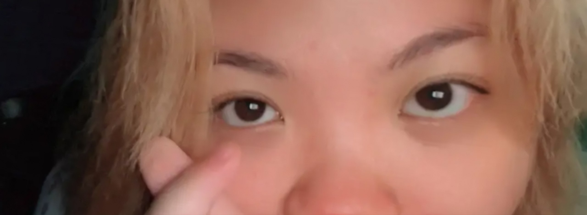